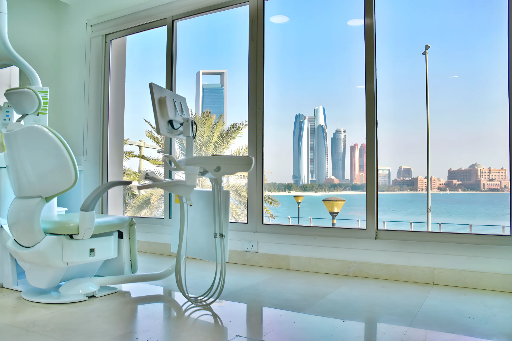
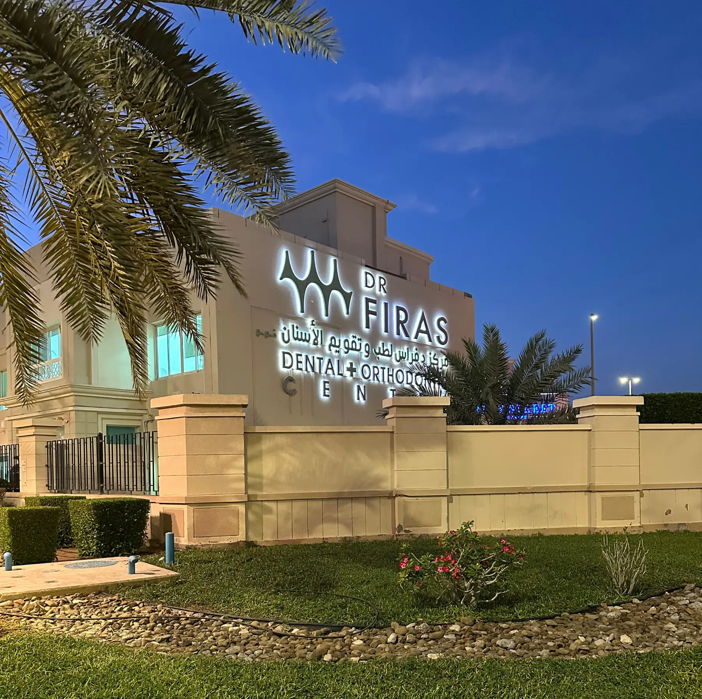
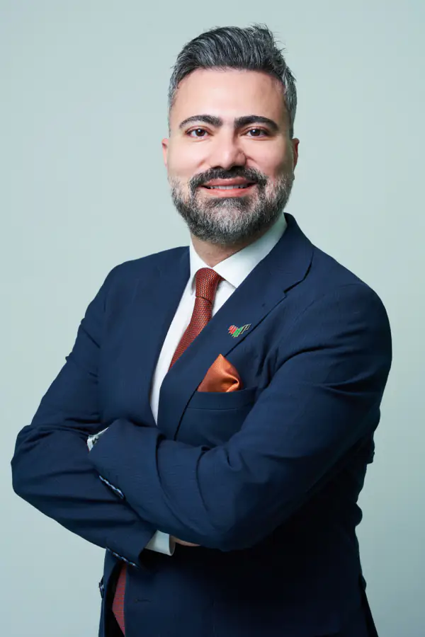
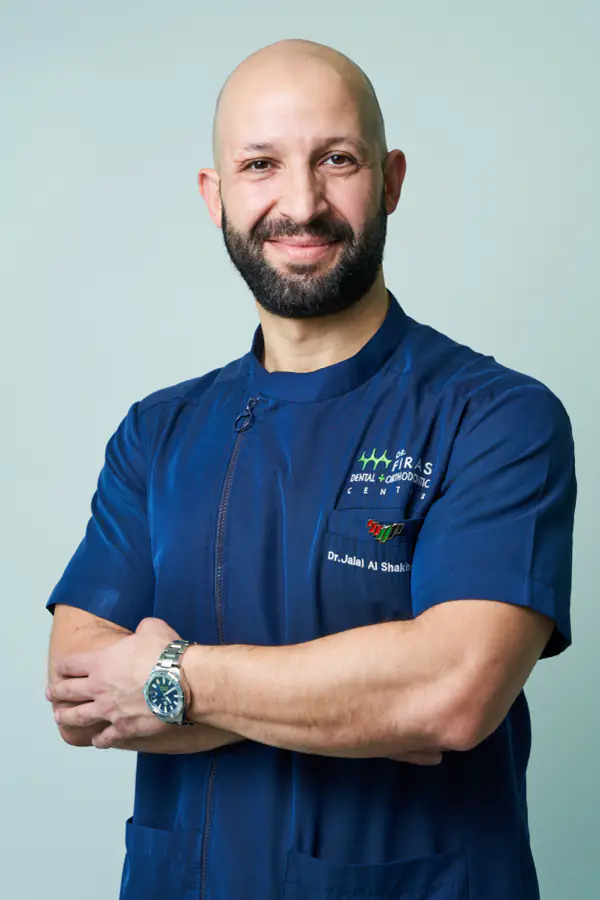
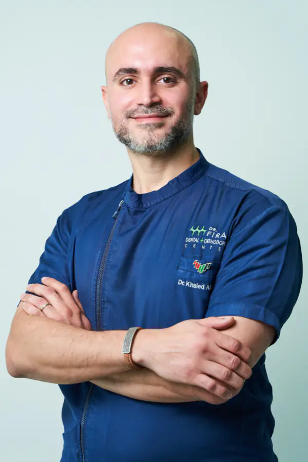
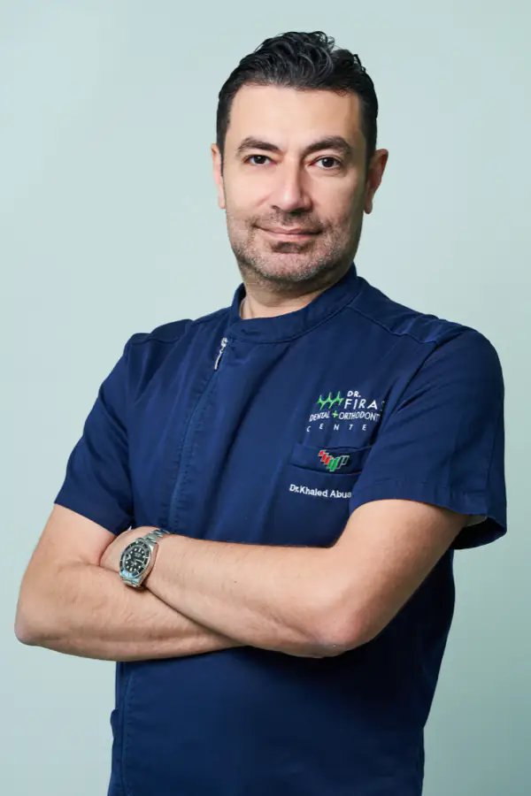
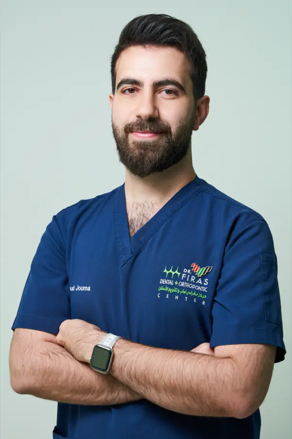
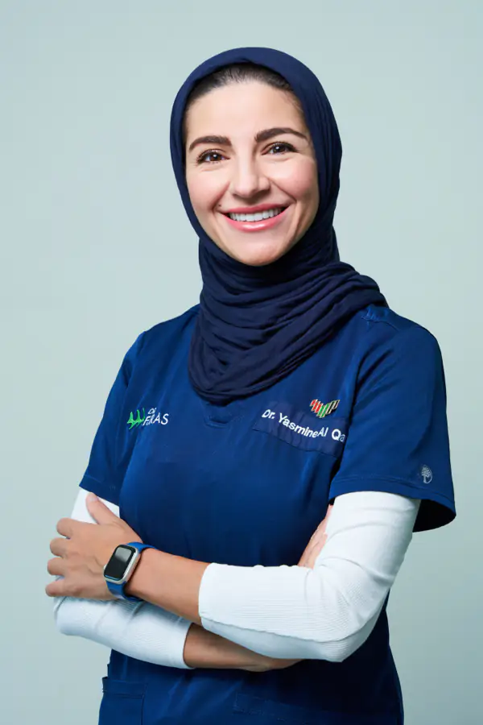
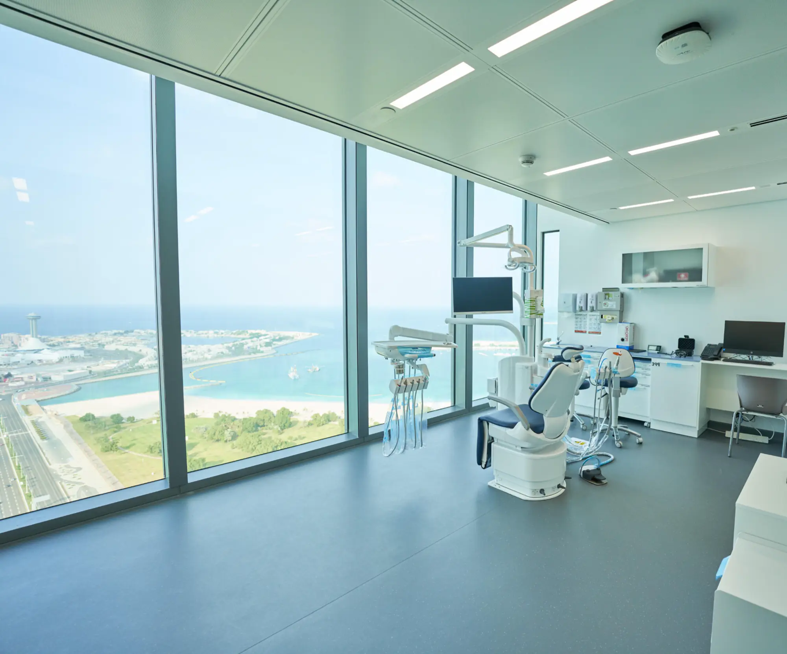

الزراعة، وكثيرًا في زيارة واحدة
يعمل د. فراس في زراعة الأسنان منذ أكثر من 20 سنة، منها 10 سنوات في التحميل الفوري. فإذا سمح العظم، تخرج بتاج مؤقت في نفس اليوم.
زراعة الأسنان، التقويم وInvisalign، علاج الليزر، علاج العصب، علاج اللثة والفحص الدوري لكل العائلة. أسّسه د. فراس جمعة، أخصائي زراعة الأسنان، ولكل قسم عندنا أطباؤه المتخصصون تحت سقف واحد.
للتقويم خط خاص: 02 222 2700

مركز المارينا · الإثنين – الخميس 9 ص – 7 م
4.7 على Google من 964 تقييمًا
مركزنا الرئيسي في مارينا أوفيس بارك. ونشغّل أيضًا قسم الأسنان في مستشفى ريم، وعيادة لموظفي أدنوك داخل مقرّهم الرئيسي.

لكل قسم أخصائيوه، فتُعالَج عند الطبيب المناسب: جرّاحون للزراعة، وأخصائيو علاج العصب لقنوات الجذور، وأخصائيو التقويم للتقويم.
تفاصيل كل العلاجات (بالإنجليزية)المؤسس وأخصائي زراعة الأسنان. طبيب أسنان إماراتي بخبرة تزيد على 30 سنة، ويقود الفريق في مركز المارينا.
يعمل د. فراس في زراعة الأسنان منذ أكثر من 20 سنة، منها 10 سنوات في التحميل الفوري. فإذا سمح العظم، تخرج بتاج مؤقت في نفس اليوم.

حصل على الماجستير في طب الأسنان بالليزر من جامعة آخن في ألمانيا عام 2005، وكان من أوائل من استخدموا ليزر Er,Cr:YSGG وEr:YAG للأسنان واللثة في الإمارات.
بسير عمل رقمي وفنيّي مختبر داخل المركز، تُصنع التيجان والتركيبات عندنا. والحالات المعقّدة تُخطَّط مع جرّاحي الوجه والفكين وأخصائيي التركيبات، ومع زملاء في الخارج مثل البروفيسور Alessandro Pozzi في إيطاليا.
ويشرف د. فراس أيضًا على رعاية الأسنان في مستشفى ريم والمقر الرئيسي لأدنوك. قصته كاملة (بالإنجليزية)
جرّاحو الفم، أخصائيو علاج العصب، أخصائيو التقويم والتركيبات واللثة، أطباء الأسنان العامّون وأخصائيات صحة الفم.














مركز المارينا فيلا في مارينا أوفيس بارك على كاسر الأمواج، وغرف العلاج تطل على البحر.


إذا كان الألم لا يحتمل الانتظار، تعال بدون موعد. نستقبل الحالات الطارئة.
المركز من الداخل مصمَّم ليريحك قبل العلاج، بدءًا من صالة الانتظار.

اركن سيارتك أمام الفيلا مباشرة، بدون مشي طويل في الحر.
اتصل بالاستقبال ببيانات بطاقتك، ونتأكد لك من التغطية قبل زيارتك.
فيلا B16/B17، مارينا أوفيس بارك، كاسر الأمواج، أبوظبي
قريب من مارينا مول. المواقف أمام الفيلا.
| السبت | 10 ص – 6 م |
| الأحد | 10 ص – 6 م |
| الإثنين | 9 ص – 7 م |
| الثلاثاء | 9 ص – 7 م |
| الأربعاء | 9 ص – 7 م |
| الخميس | 9 ص – 7 م |
| الجمعة | اتصل للتأكد |